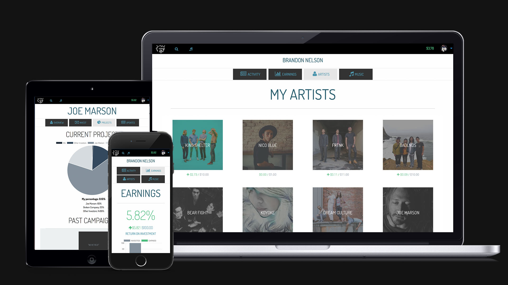
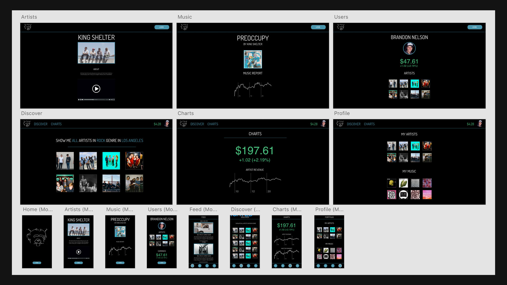
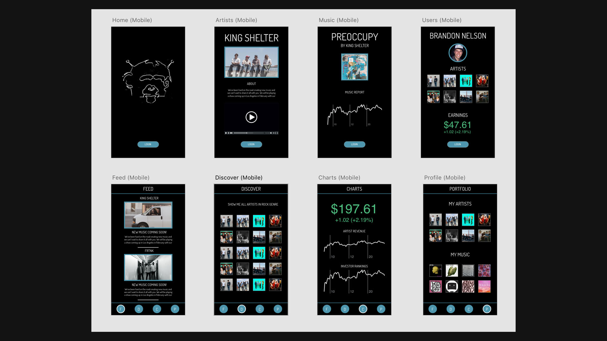
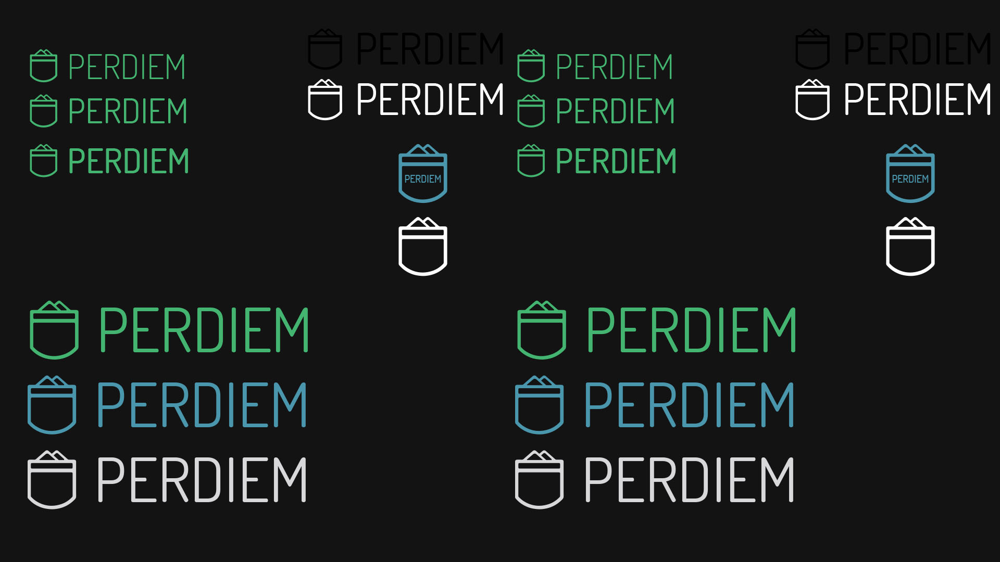
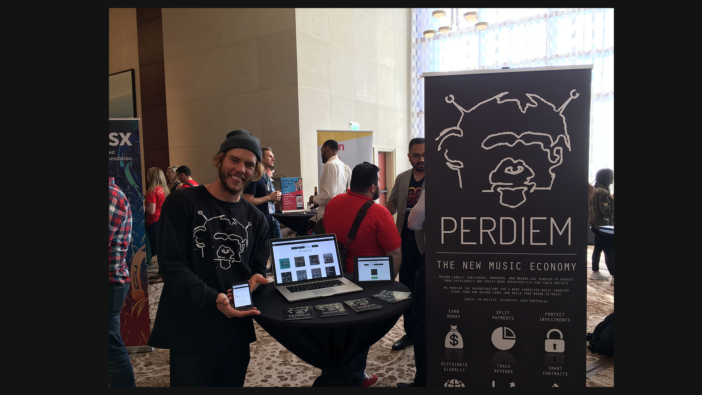

2016 / software / music / film
A platform for artist funding built as a product, a campaign, and a cultural argument: web software, investor flows, visual identity, launch films, UX testing, and SXSW-facing storytelling.

PerDiem asked artists, fans, and investors to think about music funding differently. That meant the product could not only look interesting. It had to explain itself, build trust, handle transactions, and make the value of participation legible.
The work moved through multiple visual systems, usability lessons, mobile layouts, and live launch feedback. Each redesign made the platform warmer, clearer, and more credible.




The platform attracted artists, industry interest, SXSW attention, and real transactions. It also made clear that trust mechanics, financial language, and audience education were as important as the product concept itself. The work became a major bridge between music culture, software engineering, and user research.